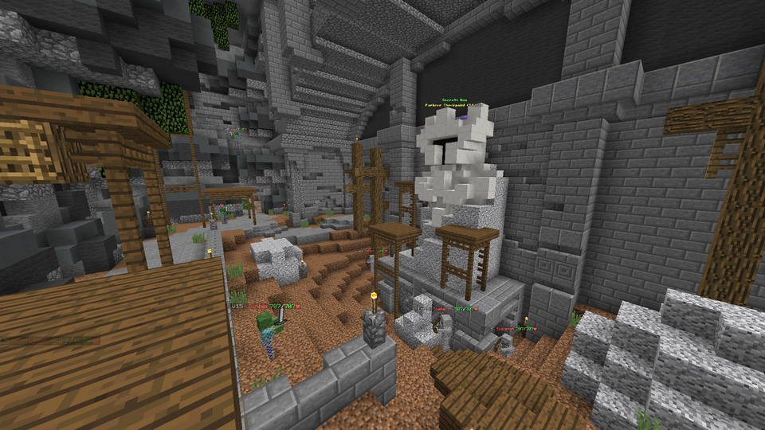
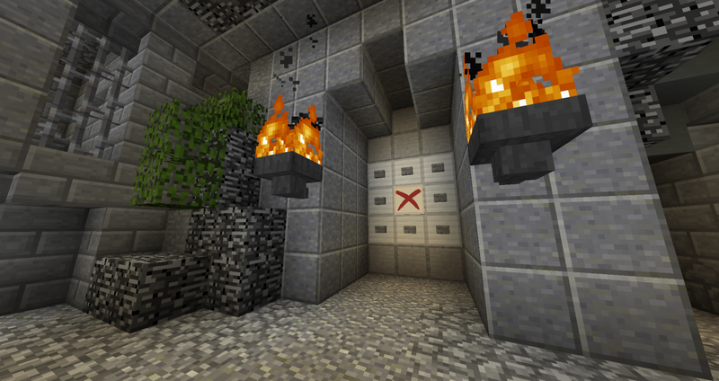

The Catacombs
As of right now, there is only one type of Dungeons called “The Catacombs”. There are 8 separate floors in this dungeon. What this means is that there is essentailly 8 different levels. Each time you play through a floor, its layout is randomized using a set of about 47 different rooms. This means that almost everytime you play it, it’s a unique experience. Although there are a few things that remain constant in each dungeon. First, is the fact that each dungeon has a series of Wither Doors that you have to get to in order to reach the Blood Room. The blood room has a mini-boss that you have to beat in order to get to the boss at the end of a dungeon. Second, is secrets that you have to collect in order to fully complete a dungeon. (More information on secrets here)
The Bosses
The different floors each have their own bosses. The following is just a small list of each floor and their respective bosses.
- The Entrance - The Watcher
- Floor 1 - Bonzo
- Floor 2 - Scarf
- Floor 3 - The Professor
- Floor 4 - Thorn
- Floor 5 - Livid
- Floor 6 - Sadan
- Floor 7 - Necron